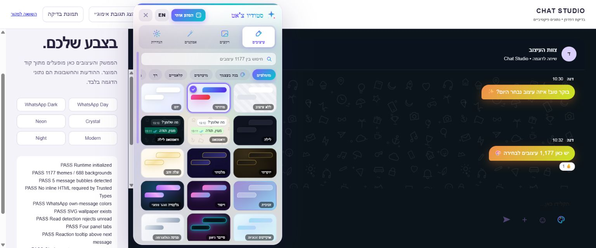
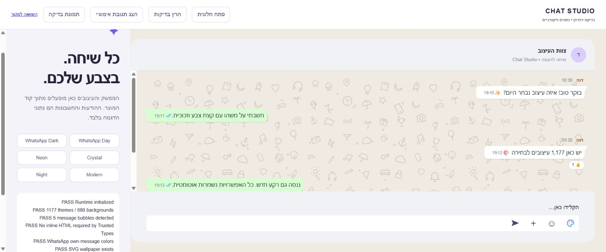
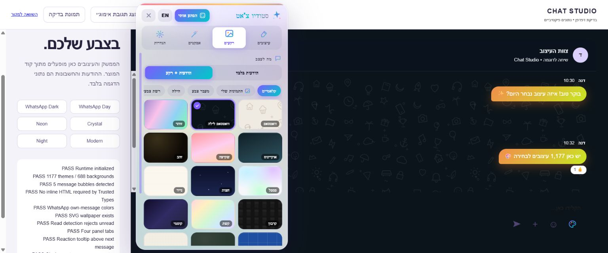
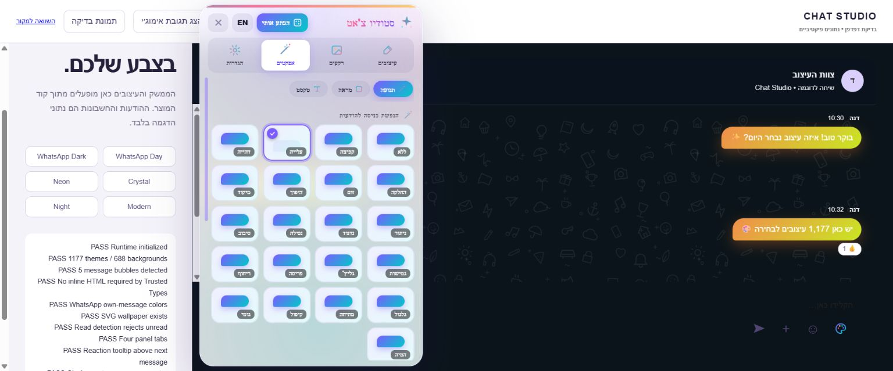
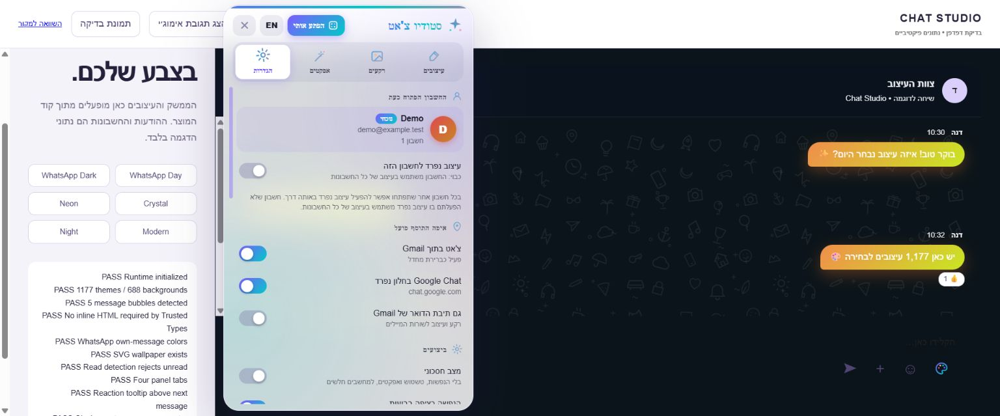

עיצובים
חפשו בעברית או באנגלית, עברו בין משפחות הסגנונות וסמנו כוכב לשמירה במועדפים. ״בנה בעצמך״ משלב שלושה צבעים אישיים.

קצת יותר צבע ביום שלכם. כל העיצובים, הרקעים והאפקטים של Chat Studio V15.3 — עכשיו גם בסקריפט אחד ל־Tampermonkey.
גרסת בדיקה 15.3.1-beta.1 · נדרשת השלמת בדיקות Google ו־Tampermonkey
 צילום המוצר בסביבת הדגמה • נתונים פיקטיביים
צילום המוצר בסביבת הדגמה • נתונים פיקטיבייםמזכוכית רכה עד ניאון עמוק. בחרו תצוגה כדי לראות את המוצר בפעולה בסביבת ההדגמה.

48 פלטות × 24 סגנונותועוד 24 עיצובים קלאסיים ואפשרות ללא עיצוב.
הטאץ׳ האישי שלכםבחרו שלושה צבעים, שמרו מועדפים או שתפו קוד עיצוב.
תנועה במינון שלכם21 אפשרויות כניסה כולל ללא תנועה, לצד מצב חסכוני.
בלשונית ההגדרות הפעילו ״עיצוב נפרד לחשבון הזה״. בחרו מראה לחשבון המזוהה, או חזרו לעריכת העיצוב הכללי.
כיבוי המתג שומר את הפרופיל האישי לפעם הבאה. כשזהות החשבון עדיין לא זוהתה, מוצג העיצוב הכללי כדי להימנע מערבוב פרופילים.
השמירה נבדקה אוטומטית. אימות מול מספר חשבונות Google אמיתיים עדיין ממתין.
חפשו בעברית או באנגלית, עברו בין משפחות הסגנונות וסמנו כוכב לשמירה במועדפים. ״בנה בעצמך״ משלב שלושה צבעים אישיים.

בחרו ״הודעות + רקע״. הוסיפו עד 12 תמונות אישיות, בחרו התאמה, מילוי, מתיחה, גודל רגיל או פריסה, וכוונו עוצמה וגוון.

הנפשת כניסה, אפקט בריחוף, אווירה, צורה וטיפוגרפיה. אפשר לכבות תנועה או להפעיל מצב חסכוני.

עיצוב אישי לחשבון, מעבר יום ולילה, בחירת שפה, שיתוף וגיבוי מלא. הפעלת עיצוב תיבת הדואר היא אפשרות נפרדת.

הגרסה הנוכחית מיועדת לבדיקה. קישור ההתקנה הציבורי יופעל לאחר השלמת אימות ההתקנה והעדכון.
למאגר ולגרסת הבדיקה ↗מדריך ההתקנה המלאמתוך האתר הרשמי וחנות התוספים של הדפדפן.
לפי הוראות Tampermonkey לדפדפן שלכם. בגרסאות Chrome המתאימות נדרש Allow User Scripts.
פתחו את קובץ chat-studio.user.js בעורך Tampermonkey ושמרו. כבו את התוסף המקורי כדי להימנע מהרצה כפולה.
רעננו את הדף ולחצו על פלטת הצבעים ליד שורת הכתיבה. ההגדרות נשמרות מקומית דרך Tampermonkey.
קובץ הסקריפט כולל כתובות עדכון קבועות. לאחר הפצת גרסה חדשה, Tampermonkey יבדוק אותה לפי הגדרות העדכון שלכם. בדיקת עדכון אמיתי בדפדפן טרם הושלמה.
לא. השינוי הוא במראה הדף בדפדפן שלכם בלבד.
הסקריפט אינו שולח או משנה הודעות בשירות. הוא מעצב את ה־DOM. אין בו שרת לאיסוף שיחות או טלמטריה.
באחסון Tampermonkey. גיבוי מלא כולל פרטי חשבונות ותמונות; שמרו אותו באופן פרטי.
בחרו ללא עיצוב ורקע ״הודעות בלבד״, או כבו את הסקריפט ב־Tampermonkey ורעננו את Google Chat.
בלשונית הגדרות השתמשו בייצוא גיבוי ובייבוא במחשב השני. למעבר מהתוסף המקורי יש מדריך ייעודי; אין גישה אוטומטית לאחסון התוסף.
ודאו הרשאת Userscripts, כבו הרצה כפולה ורעננו. תמיכה במסגרות about:blank/srcdoc עדיין דורשת אימות; ראו דוח הבדיקות.